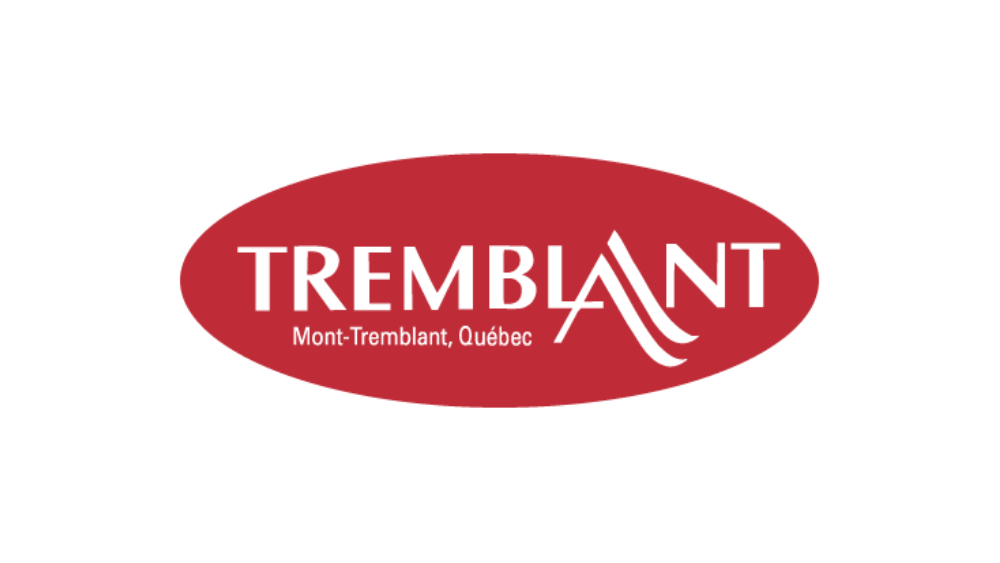
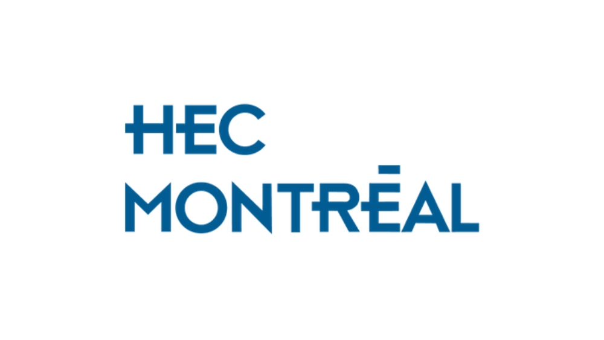

Hello, I am
Hi, I’m Augustin Renard, a passionate cybersecurity and digital forensics practitioner.
Currently completing my Master’s in Applied Cybersecurity, I’ve ranked in the top 3% globally
on TryHackMe, mastering penetration testing, privilege escalation, and network exploitation.
With strong programming skills in Python, SQL, and Bash,
I thrive in solving complex challenges, automating security
tasks, and uncovering vulnerabilities. When I’m not learning
advanced red team tactics, I’m exploring ways to secure systems
and protect digital evidence.
Let’s work together to secure the future!

I thrive on breaking down complex challenges, uncovering hidden patterns, and finding efficient, impactful solutions.
I’m passionate about staying ahead in the ever-evolving cybersecurity landscape and mastering new tools and techniques.
Whether working in diverse teams or presenting technical insights, I excel in fostering understanding and delivering results.
Bell Canada | Full-time
May 2023 - Jul 2024
Developed automated scripts for data extraction, transformation, and processing, streamlining workflows and reducing manual effort. Built and optimized APIs to enhance data integration and improve system interoperability.
Leveraged LLMs and Python scripting to preprocess large datasets, improving data quality and retrieval efficiency. Contributed to ETL process enhancements, ensuring robust data pipelines for analytics and reporting.
Key Skills: Python, API Development, Automation, Data Pipelines, ETL, LLMs, Data Processing, Scripting
Services iNSiTU inc. | Full-time
May 2022 - May 2023
Designed and developed full-stack applications with Vue.js and Python, ensuring seamless integration between front-end and back-end components. Built and optimized SQL databases to enhance data management efficiency.
Developed and deployed secure REST APIs, facilitating data exchange between services while maintaining performance and scalability. Integrated Docker for containerized application deployment, streamlining development workflows.
Implemented rigorous testing & debugging strategies to ensure application reliability and responsiveness. Developed mobile-friendly, responsive UI components to improve user experience across devices.
Key Skills: Vue.js, Python, SQL, REST APIs, Docker, Full-Stack Development, Testing & Debugging, Mobile-Responsive Design

St Mont Tremblant | Part-time
Jan 2022 - May 2022
Developed and enhanced web front-end functionalities using JavaScript, HTML5, CSS, and Bootstrap to improve user experience and site responsiveness.
Managed and updated content across WordPress and Sitecore platforms, ensuring site integrity, performance, and accessibility. Optimized layouts and structures for marketing campaigns, improving content visibility and engagement.
Collaborated with teams to troubleshoot and resolve website issues, implementing solutions to enhance functionality and maintain seamless site operations.
Key Skills: JavaScript, HTML5, CSS, Bootstrap, WordPress, Sitecore, CMS Management, Content Optimization, Front-End Development

HEC Montreal | Part-time
Sep 2021 - Dec 2021
Assisted in teaching the Python Programming (TECH20704) course, supporting students in understanding core programming concepts and debugging techniques.
Corrected homework assignments with a focus on code accuracy, best practices, and logical structuring, ensuring consistent evaluation and feedback.
Conducted weekly consultation sessions, providing one-on-one guidance on programming challenges, data structures, and algorithmic problem-solving.
Key Skills: Python, Debugging, Code Review, Algorithmic Thinking, Student Mentorship, Statistical Analysis
From Data to Justice: Enhancing Forensic Tool Reliability Through Standardized Testing
This project enhances digital forensic tool reliability by designing a standardized synthetic dataset that simulates real-world forensic scenarios, including deleted files, fragmented data, and metadata manipulation. By testing forensic tools across diverse file systems (APFS, EXT4, NTFS), it aims to identify performance inconsistencies and propose a framework for standardized testing, improving transparency and trust in digital forensic investigations.
NLP-Based Tool for Multi-Language Transcription and Translation
This project leverages Natural Language Processing to generate transcripts from live speeches, YouTube videos, and downloaded video files. With multi-language support, it provides accurate translations, making it an essential tool for live events, classes, and global audiences. Future developments include a custom GUI for switching modes (YouTube, live speech, downloaded video) and advanced features like sentiment analysis to evaluate speech emotion scores.
Technologies Used: NLTK, Pandas, NumPy, AssemblyAI, GoogleTranslator, PyTube